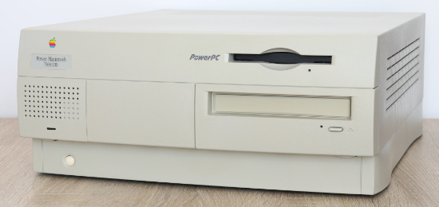
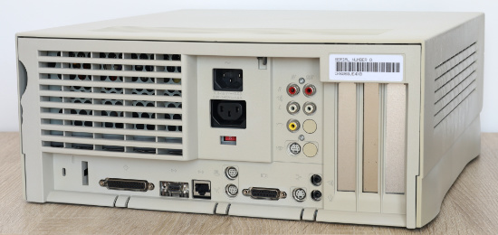
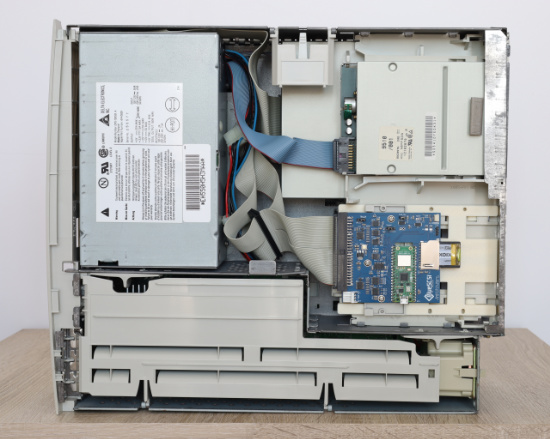
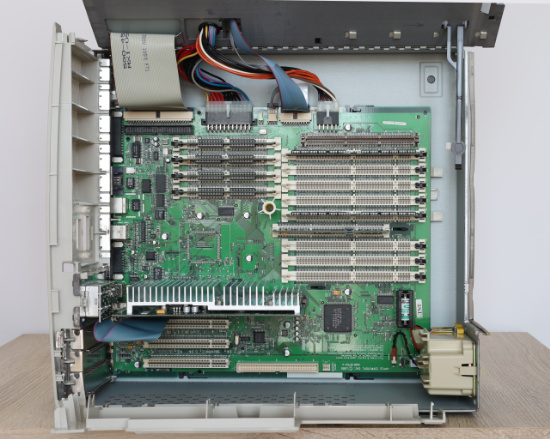

< Wróć do listy kolekcji
Dość niedoceniany, ale solidny Macintosh z lat 90. z ogromnym tłem historycznym.
Lata 90. nie były dla firmy Apple łatwe. Już na samym początku dekady było wiadome, że Motorola porzuca serię procesorów serii 68k, które były używane we wszystkich modelach, a później wystąpiły jeszcze problemy związane ze złym zarządzaniem, wyhodowaną konkurencją, która odbierała klientów mających kupować najbardziej dochodowe komputery i zmianami prezesów co chwilę.
Choć Apple jeszcze pod koniec lat 80. próbowało stworzyć stację roboczą z procesorem RISC Motoroli, to jednak nie zdecydowano się na jej dalszy rozwój i projekt „Jaguar” został skasowany. W 1991 roku ogłoszono, że Apple, IBM i Motorola nawiązały współpracę, aby tworzyć procesory PowerPC, które miały być rozwinięciem procesorów POWER od IBM, z kilkoma udogodnieniami z układów serii 88k Motoroli. Inżynierowie w Apple mieli nie lada wyzwanie. Historia tak się potoczyła, że rozwijano dwa projekty Macintoshy nowej generacji: „Tesseract”, będący modelem najwyższej półki oraz „Cognac”, który był bardziej budżetową konstrukcją, lecz skupiającą się na zapewnieniu kompatybilności z istniejącym oprogramowaniem na procesory 68k.
Z obu zespołów projektantów ten drugi radził sobie znacznie lepiej i miał szansę ukończyć prace na założony przez zarząd termin - 10. rocznicę premiery pierwszego Macintosha, czyli 24 stycznia 1994 roku. Efektem prac był Power Macintosh 6100, którego potem rozbudowano do modeli 7100 oraz 8100 i wypuszczono na rynek w marcu 1994.
Zanim jeszcze pierwsze komputery oparte o PowerPC zaczęły zdobywać rynek, Apple już pracowało nad Power Makami drugiej generacji. Nową linię maszyn określano mianem „Power Surge”, bo nowe pokolenie miało stanowić znaczny krok pod względem wydajności i możliwości. Choć niestety brakuje trochę informacji, to architekturę nazwano „The New Tesseract” (w skrócie TNT) i prawdopodobnie korzystając z formatu płyty głównej Power Macintosha 8100 zaczęto rozwijać następcę, który, tak jak pierwotny imiennik projektu, miał być komputerem z najwyższej półki. Opracowano całą rodzinę specjalizowanych układów scalonych (ASIC), które wraz z procesorem PowerPC 604 stanowiły fundament nowych komputerów. Co ciekawe, ASIC-i używane w TNT, były rozwijane od początku 1993 roku.
Tak na marginesie, nazwa ta została do samego końca z Power Macintoshem 7500 i jako jedyny ma wyraźne oznaczenie „TNT” na płycie głównej, co widać koło gniazda baterii PRAM.
Gdzieś na przełomie 1993 i 1994 roku rozdzielono prace na dwa modele: 9500 i 7500/8500, przy czym priorytet nadano temu pierwszemu, jako flagowemu modelowi. Płyty główne tych obu typów są ściśle powiązane ze sobą, współdzieląc praktycznie wszystko poza sekcjami związanymi z grafiką i wideo. W skrócie: z 7500 zrobiono model średniopółkowy poprzez wycięcie w ostatniej chwili możliwości wyjścia wideo (co wyraźnie widać np. w zaślepionych dodatkowym kawałkiem plastiku gniazdach na tyle komputera) oraz umieszczono procesor starszej generacji - PowerPC 601 100 MHz, tak jak miał to 8100. Znacznie droższy model 8500 miał już nowszy procesor 604 i oferował pełne możliwości przetwarzania wideo, aby zachęcić montażystów filmowych. Z kolei najdroższy 9500 miał podwojoną magistralę PCI (przez co też ma dwa mostki), aby oferować szaloną liczbę 6 gniazd nowego standardu kart rozszerzeń. Najdroższy model miał zupełnie wycięte układy od grafiki i przetwarzania sygnałów wideo, co w zamian oferowano na bardziej rozbudowanych, kosztownych kartach PCI.
W tym wszystkim najciekawsze jest to, że z myślą o 7500 zaprojektowano zupełnie nową obudowę, nazwaną „Outrigger”, która oferowała znacznie łatwiejszy dostęp do wnętrza niż droższe modele. 8500 miał starą, bardzo nielubianą skorupę pamiętającą modele Quadra 800, 840 i poprzednika (Power Macintosha 8100), a 9500 miał dość... prowizorycznie podwyższoną obudowę z 8500. Kupując więc tańszy komputer miało się więcej niż w najdroższym modelu, z trwalszą i przyjemniejszą w konserwacji czy rozbudowie obudową, mając w zamian fabrycznie słabszy procesor oraz mniejsze opcje pamięci RAM czy dysku twardego. Coś za coś. Jednak wszystkie trzy (7500, 8500 i 9500) posiadały opcję wymiany procesora, kiedy poprzednicy (7100 i 8100) mieli go na stałe wlutowanego.
W 1996 roku Apple w końcu zlitowało się nad Power Macintoshem 7500 i zaczęło oferować go z nowszymi procesorami PowerPC 604, zmieniając nazwę modelu na 7600. W praktyce to był nadal ten sam komputer.
Obudowę 7500 użyczono też modelowi 7200, który poza kilkoma mniej znaczącymi układami, ROMem, podobnym mostkiem, jak i samymi gniazdami PCI, nie miał nic wspólnego z komputerami architektury TNT. Apple później oferowało użytkownikom biedniejszego sprzętu „zestawy upgrade'u”, które polegały na podmianie płyty głównej na tę z 7500/7600 oraz montażu gniazd AV na tyle obudowy.
I mała ciekawostka na koniec: płyty główne Power Maków 7500/7600 i 8500 są identyczne, oczywiście poza dwoma układami odpowiedzialnymi za wyjście wideo, a komputer zna swoją tożsamość poprzez... złącze diody LED. W modelach 7500/7600 na wtyczce diody zasilania znajduje się mała pętelka, będąca zworką, która dyktuje systemowi jakim modelem jest dana maszyna. Można więc wrzucić do obudowy 7200-7600 płytę główną z 8500, zamontować panel gniazd RCA i S-Video ze wspomnianego sprzętu, aby mieć Power Macintosha 7500/7600 z pełnymi możliwościami AV.
Ta sztuka posiada wymieniony procesor z fabrycznego PowerPC 601v 100 MHz na 604e 166 MHz z modelu 7300 (który był następcą 7600 z całkowicie wyciętymi możliwościami AV). Dodatkowo, część oryginalnych plastików, które przez lata się wykruszyły, zastąpiono nowymi częściami z druku 3D.
Specyfikacja:
Galeria




^ Wróć na górę strony ^
Gra i trąbi zespół Kombi
© 2020-2026 Matlaw the Geek
Jakiekolwiek prawa ostrzyżone
{kind=link}